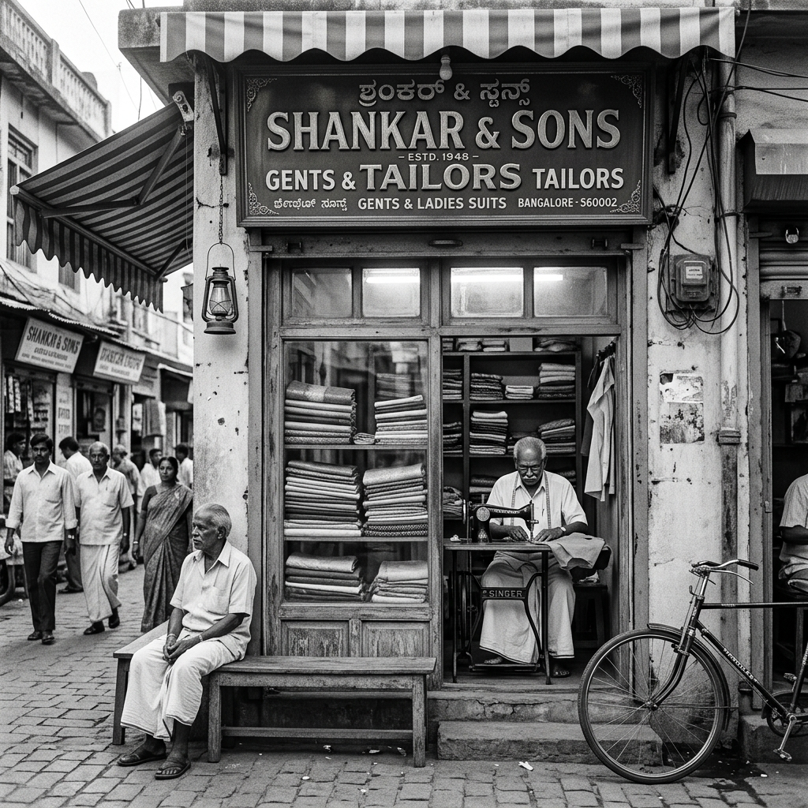

Basavanagudi, Bengaluru
Custom men's tailoring and fine ethnic wear, crafted with proprietary precision since 1972. Three generations. One neighbourhood. Unchanged craft.

Our Story
Standard Wear House opened its doors in 1972 in Basavanagudi — one of Bengaluru's oldest and most culturally rooted neighbourhoods. What began with skill, ambition, and a single needle has grown into a living institution trusted by generations of families.
For over fifty years, the store has stood at the intersection of old-city character and exacting craft — a constant amid a city in perpetual change.
"Skill doesn't shout. It shows."
What We Do
Structured to your posture, proportions, and personality. Every seam is measured twice, cut once — and finished by hand.
Sherwanis, kurtas, and dhotis crafted with a deep understanding of Indian proportions and the occasions that call for them.
A curated selection of premium suiting fabric, cotton shirting, and Indian textile — sourced to complement the craftsman's hand.
Formal shirts and dress trousers for the man who values quality off the shelf — selected with the same exacting eye as our tailored pieces.
Gopinath S R has spent over five decades developing his own proprietary pattern-cutting formulas — a system entirely his own, refined year after year.
"Fabrics & Catalogue
Browse our fabric and textile collection — from fine wool suitings to silk sherwanis and crisp cotton shirtings. Each piece in our catalogue carries the mark of quality.
Premium weight options in charcoal, navy, and earth tones — engineered for drape and durability.
Rich ceremonial fabrics for sherwanis and kurtas — sourced from established weaving traditions.
Our signature ethnic piece — cut to proportion, finished by hand, worn for a lifetime.
Crisp cottons and breathable linens — ideal for the Bengaluru climate and the formal occasion.
To browse the full catalogue or enquire about specific fabrics, reach us directly.
Request Catalogue on WhatsAppThree Generations
Started from humble beginnings with nothing but skill and ambition. Opened Standard Wear House in 1972 and over decades developed his own proprietary methods and formulas for pattern cutting and garment design — a system entirely his own. He has spent 50+ years relentlessly refining his precision and accuracy. Still at it.
Learnt the craft directly from his father. Took the business forward through exceptional personal service — deepening relationships with clients and growing the store's reputation across the community over decades.
Bringing Standard Wear House into the digital age — building its online presence, expanding its reach, and introducing modern systems to the business while preserving the original craft and standards passed down from his grandfather.
Find Us
We are in Basavanagudi, Bengaluru — one of the city's oldest and most culturally rich neighbourhoods. Walk in, or reach us directly on WhatsApp to discuss your garment, fabric, or appointment.
Basavanagudi
Bengaluru, Karnataka